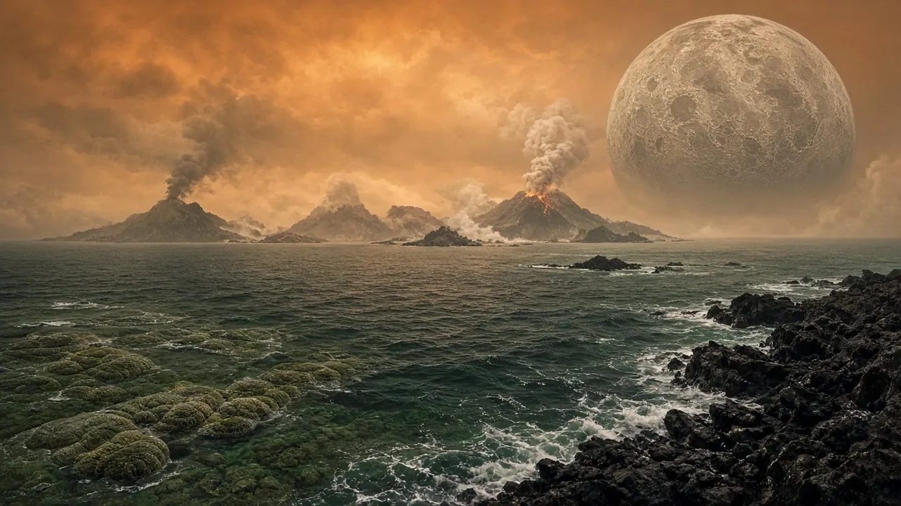

האוקיינוסים, המנוע הכחול
איך נוצרו האוקיינוסים הראשונים, ולמה הם עדיין מניעים את כוכב הלכת.
TODO machine-draft translation: English for review.

Artist’s interpretation — SI render made for Before Saving Planets; science per cited sources (not a photo).

NASA, public domain. ISS photograph ISS034-E-016601. File page

Water arrived early
A 4.4-billion-year-old zircon crystal from Western Australia suggests liquid water existed on Earth very early in its history.
Life began in the sea
The earliest life was microbial. Ocean microbes made oxygen by photosynthesis, leading to the Great Oxidation Event about 2.4 billion years ago.
Oceans today
The ocean covers about 71% of Earth’s surface and holds about 97% of Earth’s water. Its average depth is about 3,700 meters (12,100 feet).
The deepest place
Challenger Deep in the Mariana Trench is the deepest known point: nearly 11,000 meters (about 36,000 feet).
Sources
Keep digging: Continents on the MoveSeas: Where Oceans Meet LandThe Dead Sea: Lowest Place on Land · Deep Time